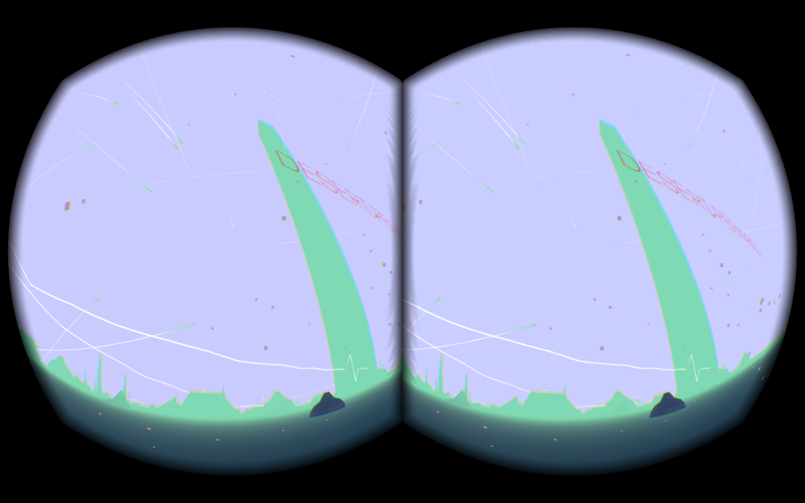

DESERT PEEKABOO VR (PC/MAC)
A non-game for VR Glasses made at Shayla Games with music made by John Brown from BoneLoaf.
SCREEN IMPLOSION
Screen Implosion is a games label and producer of classic arcade games with a contemporary twist. Screen Implosion was founded in 2015 in Berlin.
news, chronicles and easter eggs!!
© 2026 SCREEN IMPLOSION